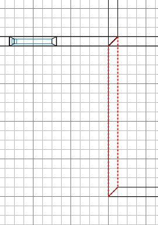
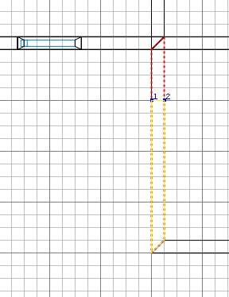
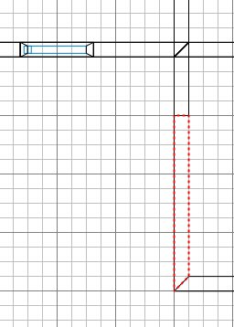
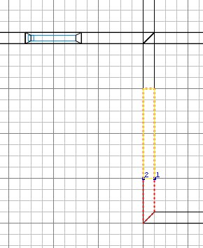
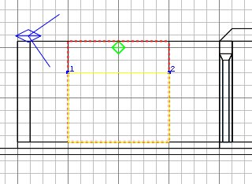
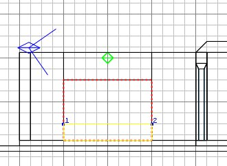
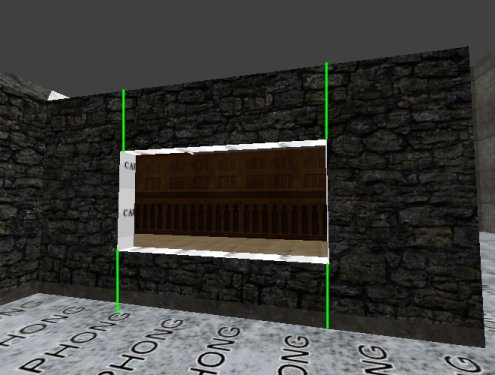

|
Run Radiant. Open the tutorial map.
Select the environment ceiling and Hide it.
Select the roof over where we will put the
window (see the picture below) and Hide it
too.
Press 5 for the grid scale.
In the 2D, select the wall that we will put
a window in.

Press X (for the clipper) and
click at spots 1 and 2:

Press shift+return (to cut the brush) then
shift+click on the smaller chunk to deselect
it.

The clipper tool remains active, so click
at 1 and 2...

...and press shift+return again.
Shift+click on the smaller chunk to deselect
it.
Ctrl+tab (twice is clearer) to get a side
view. Click on 1 and 2...

...and press shift+return again.
Shift+click on the smaller chunk to deselect
it.
Then click at 1 and 2 as shown below to
complete the cutting out.

If the smaller chunk is not yellow,
press ctrl+return to make it yellow.
Press return to eliminate the chunk that
forms the window space.
Press ESC twice to turn everything off.
(The green lines shown below are indicators
I added, explained next.)
 So
we have the window opening. Really we
should now do one of two things for best
performance: either put in a window frame,
or cut up the side walls to prevent textures
getting drawn behind an obscuring brush (as
indicated by the green lines). To move
along more quickly we'll do the quick and
dirty - which is especially ok if the
current map area that the players are in has
plenty of FPS slack. Select all the
caulked window ledge faces and give them a
wooden or other texture, say like
plaster. I'm using town_c61a which has
a texture that doesn't need aligning.
If you choose a wooden texture, you'll
probably need to rotate the alignment for 2
of them, like you did in the door frame. Press
ESC.
|